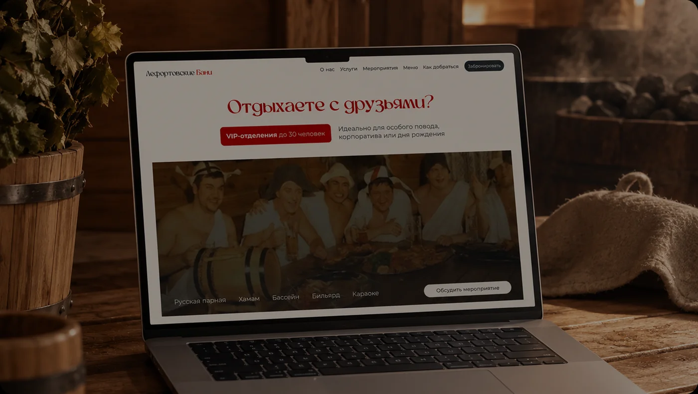
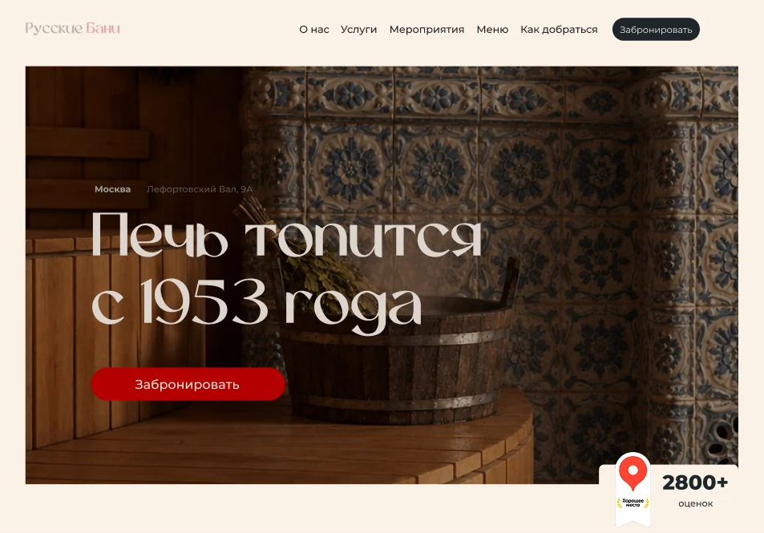
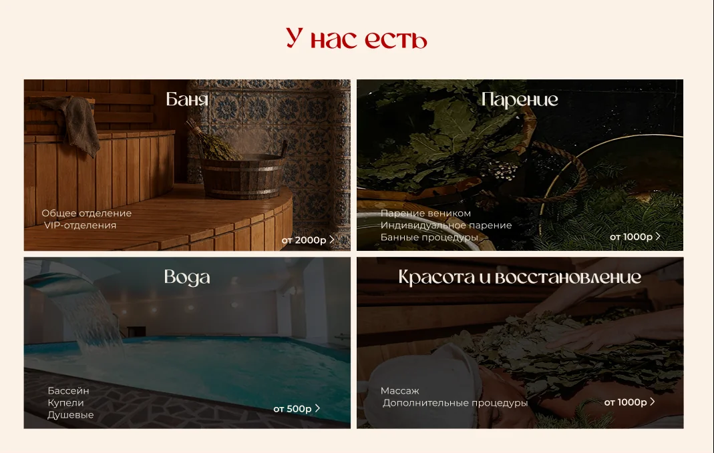
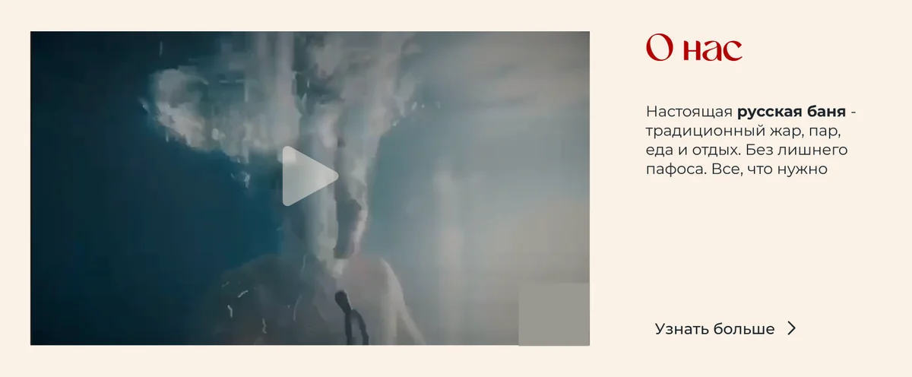

Лендинг для бани. Имидж и удержание новых клиентов

Задача:
Цель первоначальная – имиджевый/информационный сайт. Разгрузка сотрудников и автоматизация (за счет интеграции с CRM и размещения всей актуальной информации и условий)
Что я сделала:
- В рамках анализа выгрузила и проанализировала около 3000 отзывов с Яндекс.Карт. Выявила паттерны негативного опыта: гости уходили не из-за качества услуг, а из-за информационного разрыва – необходимо было понять какие именно данные показывать на сайте.
- Разработала структуру сайта: понятная навигация, актуальная информация об услугах и ценах, удобный сценарий бронирования
- Отрисовала дизайн – визуальный язык должен был демонстрировать историю бренда. Важно было не уходить в гламурные дорогие спа услуги. Это мужская баня со своим характером.
Особенности:
- Никакой продающей воронки – сайт работает как справочник, который закрывает все вопросы без лишних взаимодействий с колл-центром. Фокус на имидже
- Дополнительная точка роста именно для бизнеса была выявлена в рамках моего исследования – заработать можно с удержания нового клиента. Огромное кол-во лидов компании не нужно – огромная база постоянников. Но при этом новые клиенты, получив негативный опыт (не смог забронировать, ориентировался на неактуальные цены, не понял как заехать на территорию) в постоянников не превращались
Результат:
Количество звонков администратору после запуска снизилось.


